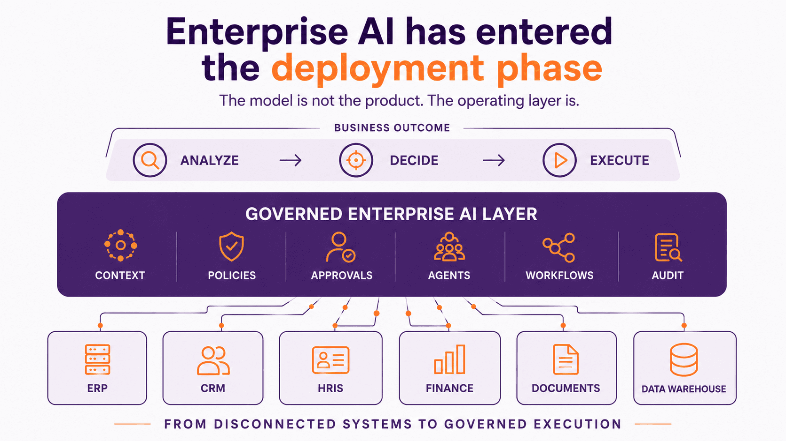

Build AI agents with enterprise roles
Define what an agent can do, which tools it can use, who owns it, and where human review is required.
The NEWWORK Enterprise AI
NEWWORK is the governed execution layer where the job gets done. Build AI agents, place them into governed FLOWs, connect the systems they run across, and let work execute - under policy, approvals, and a complete audit trail.
Systems of record
CRMHRISFinanceServiceNEWWORK execution layer
Agents + FLOWs + systems + enterprise controlPeople + agents
ApprovalAgent actionAuditOutcomeWhy NEWWORK
Every ERP, HRIS, and workflow tool your organization has deployed digitized the process. None of them moved the coordination cost off the person. Approvals still land in inboxes. Handoffs still break at system boundaries. AI copilots still produce recommendations that someone else has to act on. NEWWORK is the first time the burden moves from the person to the platform.
Define what an agent can do, which tools it can use, who owns it, and where human review is required.
Turn prompts and decisions into executable workflows with routing, approvals, exceptions, and evidence.
Give AI controlled access to systems of record, documents, policies, tools, and business data.
Agents and people complete work under policy, permission, human-in-the-loop approval, and audit-ready monitoring.
Architecture
Systems of record remain the source of truth. NEWWORK becomes the execution layer that turns context, policy, agents, people, and system updates into controlled work.

Platform layers
Every layer has one concrete job: create agents and apps, connect enterprise systems, orchestrate work, route decisions to people, and keep execution under control.
Core runtime and control
The governed execution layer. Agents get roles, tools, context, monitoring, approvals, and human control. Workflows route across people, agents, tools, and systems with policy, audit evidence, and full compensability.
Explore the platformHuman work surface
The intelligent workplace where employees and managers see, approve, collaborate, and control AI-executed work. Tasks, approvals, documents, agent handoffs, and business actions in one governed surface.
Explore EveryDesign layer
Turn enterprise-specific work into governed apps, agents, and FLOWs. Build them manually or describe your process in natural language and let NEWWORK AI create it for you - inside platform governance throughout.
Explore Create and AI BuilderHow customers start
The platform stays visible whether the first entry motion is foundation, outcome, or builder-led.
Enterprise AI Foundation
Value Pack
Builder layer
Governance and security
Every AI action in NEWWORK is an enterprise action: permissioned before it runs, routed by policy, approved by the right person, recorded completely, and reviewable in natural language - not just what happened, but why.
Demo center
Each demo shows the same governed sequence: context, policy check, agent action, human approval, and audit evidence - applied to a workflow your team will recognize.
Revenue Execution
Workforce Activation
Spend Control
Resources
Resources are separated by intent: gated whitepapers for strategic evaluation, open blog articles for category education, and demos for product proof.
Next step
Start with one workflow. Tell us where work is breaking today.